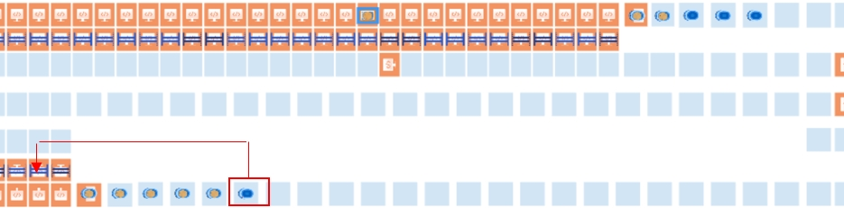

| Procedure ID | proc_start_optsweep_agv_system_reset_metrics_start_closeout_bagout_verify_running_shutdown_v1 |
|---|---|
| Title | Start OptiSweep AGV System (Reset Metrics → Start System → Close Out/Bag Out → Verify Running → Shut Down) |
| Procedure Type | operation |
| Primary Role | operator |
| Support Safe | Yes |
| Capability Tags | fleet_system_status |
| Access Surface | rms_ui, tipper_hmi |
| Audience Roles | operator |
| Failure Pattern Tags | None |
| Validation Status | needs_sme_review |
| Merge Status | source_finalized |
Perform the required AGV start-up prerequisites (nine empty AGVs: five under the north rack and four under the south rack), start the OptiSweep system 15 minutes before the sort, run the documented start sequence (Reset Metrics → Start System → Close Out/Bag Out), verify the system returns to the "Running" state after Bag Out, and then shut down.
Use to start the OptiSweep AGV system for an upcoming sort, ensuring the system is properly prepared (nine empty AGVs) and that the system transitions back to the "Running" state after close out (Bag Out).


Responsible role: operator
Instruction:
Verify there are nine (9) AGVs without totes in the system: five (5) under the north rack and four (4) under the south rack.
Expected result:
You confirm five (5) empty AGVs under the north rack and four (4) empty AGVs under the south rack.
Stop or Escalate If:
Responsible role: operator
Instruction:
If fewer than nine empty AGVs are present, move an AGV without a tote into the zone that is missing an empty AGV, then add that AGV to the RMS after moving it.
Expected result:
The missing zone now has an empty AGV, and the moved AGV has been added to RMS.
Stop or Escalate If:
Responsible role: operator
Instruction:
Confirm the system start will occur 15 minutes before the sort starts.
Expected result:
You confirm the start time is set to occur 15 minutes before the sort begins.
Responsible role: operator
Instruction:
On the system control surface (System API Controls), perform the Reset Metrics step.
Expected result:
Metrics have been reset (Reset Metrics action completed on the System API Controls screen).
Responsible role: operator
Instruction:
On the system control surface (System API Controls), start the system using the System Startup control.
Expected result:
The system is placed into the running state via the System Startup control.
Responsible role: operator
Instruction:
On the system control surface (System API Controls), perform Close Out (Bag Out) as the next step in the sequence.
Expected result:
Close out (Bag Out) is completed.
Responsible role: operator
Instruction:
After close out (Bag Out) is completed, verify the system state returns to "Running".
Expected result:
System state is "Running" after Bag Out completes.
Stop or Escalate If:
Responsible role: operator
Instruction:
On the system control surface (System API Controls), shut down the system using the System Shutdown control.
Expected result:
System shutdown is initiated/completed via the System Shutdown control.